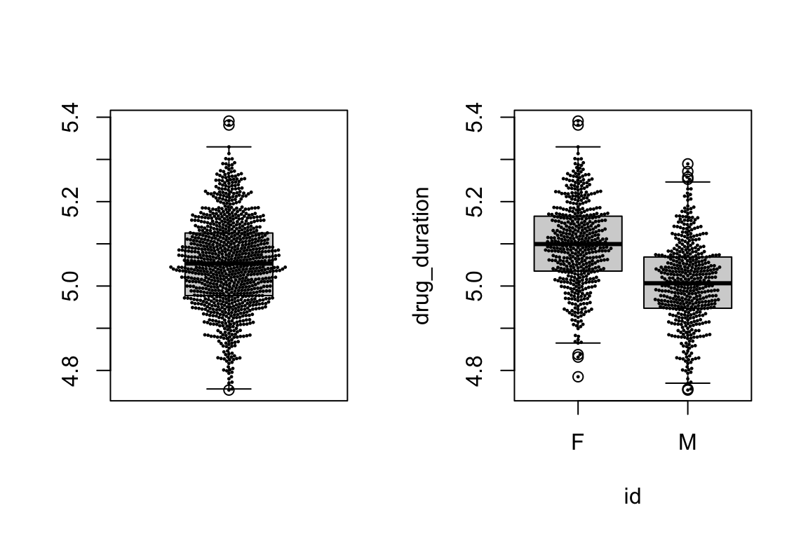
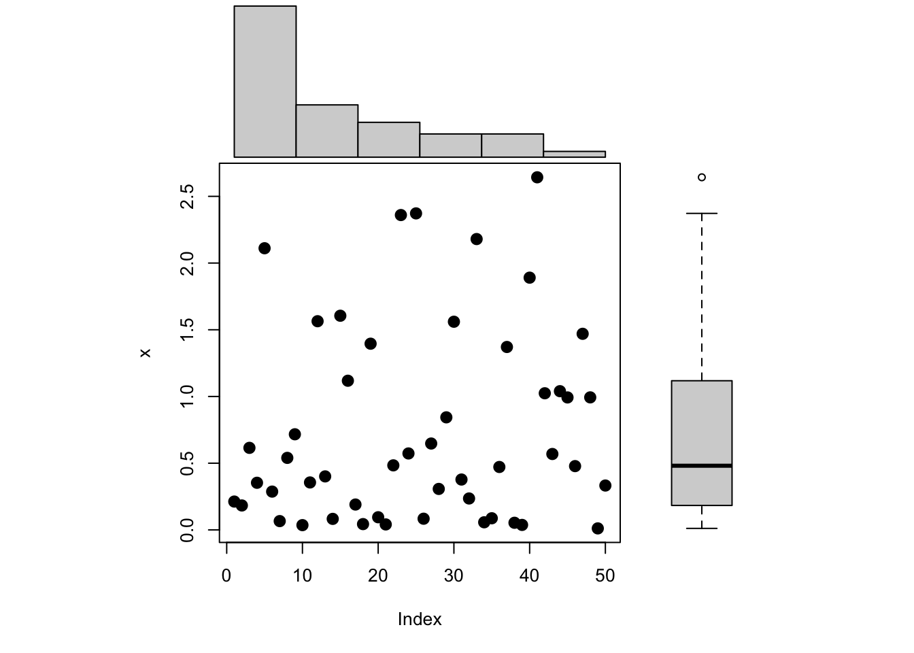

Reproducible Research, (some) Git, plotting basics and data structures
Robert Settlage
2021-08-18
Last updated: 2021-10-12
Checks: 7 0
Knit directory: STAT5014_Fall2021_website/
This reproducible R Markdown analysis was created with workflowr (version 1.6.2). The Checks tab describes the reproducibility checks that were applied when the results were created. The Past versions tab lists the development history.
Great! Since the R Markdown file has been committed to the Git repository, you know the exact version of the code that produced these results.
Great job! The global environment was empty. Objects defined in the global environment can affect the analysis in your R Markdown file in unknown ways. For reproduciblity it’s best to always run the code in an empty environment.
The command set.seed(20210816) was run prior to running the code in the R Markdown file. Setting a seed ensures that any results that rely on randomness, e.g. subsampling or permutations, are reproducible.
Great job! Recording the operating system, R version, and package versions is critical for reproducibility.
Nice! There were no cached chunks for this analysis, so you can be confident that you successfully produced the results during this run.
Great job! Using relative paths to the files within your workflowr project makes it easier to run your code on other machines.
Great! You are using Git for version control. Tracking code development and connecting the code version to the results is critical for reproducibility.
The results in this page were generated with repository version 00650cd. See the Past versions tab to see a history of the changes made to the R Markdown and HTML files.
Note that you need to be careful to ensure that all relevant files for the analysis have been committed to Git prior to generating the results (you can use wflow_publish or wflow_git_commit). workflowr only checks the R Markdown file, but you know if there are other scripts or data files that it depends on. Below is the status of the Git repository when the results were generated:
Ignored files:
Ignored: .DS_Store
Ignored: .Rhistory
Ignored: .Rproj.user/
Ignored: analysis/Week_6_R_functions_logic_good_programming_practices_cache/
Ignored: analysis/Week_7_matrix_speed_apply_cache/
Untracked files:
Untracked: analysis/Week_7_matrix_speed_apply.Rmd
Untracked: sensory_raw.RDS
Unstaged changes:
Modified: analysis/_site.yml
Note that any generated files, e.g. HTML, png, CSS, etc., are not included in this status report because it is ok for generated content to have uncommitted changes.
These are the previous versions of the repository in which changes were made to the R Markdown (analysis/Week_2_Data_structures_Reproducible_research_Git.Rmd) and HTML (docs/Week_2_Data_structures_Reproducible_research_Git.html) files. If you’ve configured a remote Git repository (see ?wflow_git_remote), click on the hyperlinks in the table below to view the files as they were in that past version.
| File | Version | Author | Date | Message |
|---|---|---|---|---|
| html | 940eb7a | rsettlag | 2021-10-11 | Build site. |
| html | 61dccca | rsettlag | 2021-10-05 | Build site. |
| html | bea89e9 | rsettlag | 2021-10-05 | Build site. |
| html | 272daa2 | rsettlag | 2021-09-29 | Build site. |
| html | 6405d42 | rsettlag | 2021-09-28 | Build site. |
| html | f00e400 | rsettlag | 2021-09-23 | Build site. |
| html | b7fc837 | rsettlag | 2021-09-21 | Build site. |
| html | 71a145a | rsettlag | 2021-09-21 | Build site. |
| html | 3c787a0 | rsettlag | 2021-09-15 | Build site. |
| html | 94db724 | rsettlag | 2021-09-15 | Build site. |
| html | 356388f | rsettlag | 2021-09-15 | Build site. |
| html | 6f1f6d9 | rsettlag | 2021-09-14 | Build site. |
| html | 2b219b3 | rsettlag | 2021-09-08 | Build site. |
| html | ecc7b6a | rsettlag | 2021-09-08 | Build site. |
| html | 201099d | rsettlag | 2021-09-08 | Build site. |
| html | 46f2b64 | rsettlag | 2021-09-08 | Build site. |
| Rmd | 47cc162 | rsettlag | 2021-09-08 | wflow_publish(republish = TRUE, all = TRUE, update = TRUE) |
| html | 47cc162 | rsettlag | 2021-09-08 | wflow_publish(republish = TRUE, all = TRUE, update = TRUE) |
| html | 247d307 | rsettlag | 2021-09-08 | Build site. |
| Rmd | 9c61b27 | rsettlag | 2021-09-08 | week 2 |
| html | 9c61b27 | rsettlag | 2021-09-08 | week 2 |
Today’s Agenda
- Review the concepts of Reproducible Research
- Review Git
- Introduce Data Wrangling and Exploration
- Summarizing and exploring data
- Introduce Base R plotting
- Vectors, matrices, and data frames
Reproducible Research - Review
This was the scenario:
You had worked 6 months to analyze a data set. Someone else analyzes the data and comes to different conclusions. How good are your notes???
Answer: Awesome, because you annotated your code with text to create a RR compendium
Reproducible Research - Concepts
Basically just switching the role of code and comments in writing software
Guide to this topic here: http://ropensci.github.io/reproducibility-guide/
In general, we should weave code and text into a complete reference of our work. The document should:
- download or otherwise load/generate data
- reproduce steps to munge data
- recreate analysis steps
- create figures and tables
- explain any and all steps along the way
- end with conclusions drawn
- optionally add suggestions for future experiments
Version Control
What is version control - a system for storing data and tracking changes.
- Why should I use version control?
http://stackoverflow.com/questions/1408450/why-should-i-use-version-control - R and version control for the solo data analyst
http://stackoverflow.com/questions/2712421/r-and-version-control-for-the-solo-data-analyst
Thoughts or comments??
Version Control and Git
Git is essentially a database of snapshots of the project directory tree. You decide when and what to take snapshots of and if you using GitHub (or similar) when to push a copy to a remote repository.
The basic workflow is:
- git pull
- do work
- git pull to make sure you have latest files
- git add <your changed file> tells git what change you care about
- git commit -m “some INFORMATIVE message about the changes”
- git push to the repository (local or remote)
- repeat
Git file states
- Untracked - files that have not been added to the database
- Committed - data is safely stored in your local database
- Modified - file is changed but not committed it to your database yet
- Staged - a modified file in its current version will go in next commit snapshot

Git file lifecycle
Back to Reproducible Research Analysis
From Hadley Wickham & Garrett Grolemund’s R for Data Science
http://r4ds.had.co.nz

Today our goal is to jump start your R and look at creating figures. As a data scientist, 80% of our time will be spent in data wrangling/munging.
Data wrangling
Data wrangling or munging is the process of going from raw to useful data. This is often ~80% of the time spent on a project. Steps may include any or all of the following:
| Step | Examples |
|---|---|
| Import |
|
| Clean |
|
| Reformat |
|
Data wrangling – getting data
- load internal dataset
library(help = "datasets")
?PlantGrowth- copy and paste
- load file
- local
- web
- local
?read.table; ?read.csv
url<-"http://www2.isye.gatech.edu/~jeffwu/wuhamadabook/data/onewaymuzzle.dat"
chp2_muzzle<-read.table(url,header=T)
#google "how to get data into R"- generate data
set.seed(123456)
coin_flips<-rbinom(n = 1000,size = 1, prob = .501)Data importing – good practices
If you are getting data from the internet, it is a good idea to protect against:
- data source being down
- data source being changed
- other unknown issues
I generally pull the data down, then save the data to an .Rds file. My project includes:
- commented code used to pull data down
- commented code used to save data
- code to read data into R from the saved file
- AND often project image files as mid-stream checkpoints
Data wrangling - cleaning
Getting data into R is usually not the problem, often the fun starts when we start to actually look at what we were given. Common issues:
| issue | examples |
|---|---|
| missing values | recorded as “-”, “NA”,“0” |
| jagged arrays | missing fields |
| inconsistent data coding | 2017-01-22 vs 01-22-2017 vs Jan 22, 2017 |
| line termination | platform inconsistencies |
| field delimiter issues | csv has data values that use commas |
And pretty much any other issue you might imagine.
Data wrangling - summarizing and tables
A quick way to see if there are issues with the data is to create a summary of the data. There are many useful metrics to capture, BUT, at a high level, here we really are most concerned with metrics associated with the data structure, i.e. number of observations, missing values, data types etc. R has a function for that… :)
?str
?summary
str(iris)
summary(iris)Data wrangling - reformatting/standardizing
Now that we have the data in R, we need to get it into a useable format. One idea for a set of standards for structuring a data set is to create a so called “tidy” data set.
http://vita.had.co.nz/papers/tidy-data.html
Essentially, we need to reformat the data such that:
- Each variable forms a column.
- Each observation forms a row.
- Each type of observational unit forms a table.
Any other structure to the data is considered messy. Sound easy?
Data wrangling - reformatting
OK, what is wrong with this?
| treatmenta | treatmentb | |
|---|---|---|
| John Smith | NA | 2 |
| Jane Doe | 16 | 11 |
| Mary Johnson | 3 | 1 |
What we want is something more akin to a model:
\[ y_i = \beta_1 x_{i1} + \beta_2 x_{i2} ... \]
Going to give this topic more time when we talk though using the tidyverse and pipes
To print the table in a document, we have several options. My current favorites are kable and stargazer. Other community tools include Pander and xtable.
Data wrangling – other wrangling tasks
dplyr is another package by Hadley Wickam. As a practicing data scientist, he has a good feel for what functions we would like to see.
A few data processing goals enabled in dplyr
- data summarizing
- subsetting by observation
- subsetting variables
- creating new variables
- grouping data
- combining data
look at Data Wrangling Cheatsheet
Data wrangling – quick plot summaries
Sometimes, a picture really is worth a 1000 words.

Data wranging – common plots
- histogram
- box plot vs violin plot
- scatter plot
- pie chart, …
don’t forget color and shape as dimensions
Exploratory Data Analysis (EDA)
Data exploration is the process of learning your data.
Free book (in Rbookdown with pay options): https://leanpub.com/exdata
In my experience, plots are crucial in learning about your data. I make A LOT of plots when I get a dataset. Plots can also be very helpful in assumption checking. The more factors you have, the more difficult it is to come up with a single (meaningful) plot that gives you a useful view into the data.
Free course: https://www.udacity.com/course/data-analysis-with-r--ud651
“Exploratory data analysis is an approach for summarizing and visualizing the important characteristics of a data set. Promoted by John Tukey, exploratory data analysis focuses on exploring data to understand the data’s underlying structure and variables, to develop intuition about the data set, to consider how that data set came into existence, and to decide how it can be investigated with more formal statistical methods.”
Velleman, Paul and Hoaglin, David (1981), The ABC’s of EDA: Applications, Basics, and Computing of Exploratory Data Analysis, Duxbury.
NIST and EDA
http://www.itl.nist.gov/div898/handbook/eda/eda.htm
- what is typical value
- what is uncertainty for typical value
- what is a good distribution for the set of numbers
- what is the relationship between factors
- what are the most important factors
- is there a structure to the data
- are there outliers
NIST comments on assumptions for measurement processes
- random drawings
- fixed distribution
- distribution has fixed location
- distribution has fixed variation
Univariate or single response variable leads to this model:
response = constant + error
Which then gives this set of assumptions
- data are uncorrelated
- random component has a fixed distribution
- deterministic component is a constant
- random component has a fixed variation
Useful functions and tools to explore data
- dim()
- str()
- summary()
- mean, sd, is.na, complete.cases, range
- summaryBY (aggregate)
- scatter plot, hist (plus rug), barplot, boxplot, violin plots, pie
- qqplot, qplot, ggplot2, pairs
- ordination and PCA plots
- hive, circular, network plots
- dendrograms, heatmaps, etc etc
EDA on a single variable
Generally, on a single variable, we would be interested in:
- basic summary statistics (count, mean, sd, etc)
- data issues (missing data, formatting errors, outliers)
- distribution of data
histograms, boxplots, transformations, word clouds
EDA on two variables
When we get to two variables, we add to our single variable list, learning about any relationships between the variables.
scatter plots, correlations, conditional means
EDA on multiple variables
Again, all the above, but now we need more tools to visualize in higher dimension or dimensional reduction techniques.
color, shape, PCA, ordination, network graphs
Example EDA
This blog is a little commercial for my taste, BUT, he does a great job at EDA imo:
Plot inspiration
http://www.r-graph-gallery.com
https://flowingdata.com/2016/03/22/comparing-ggplot2-and-r-base-graphics/ https://simplystatistics.org/2016/02/11/why-i-dont-use-ggplot2/ http://varianceexplained.org/r/why-I-use-ggplot2/
Multipanel plots
I personally find these the most rewarding, but most time consuming plots. I often end up doing them in base R because -I- find the layout easier for me to understand.
Consider a Base R 3 panel plot showing density of a scatter plot in the margins.

| Version | Author | Date |
|---|---|---|
| 6579af6 | rsettlag | 2021-08-19 |
Multipanel base plot
How do we get to the above? – We manipulate the canvas.
This site has everything needed to make fantastic plots using base functions:
Multipanel base plot example
https://r-charts.com/base-r/combining-plots/
# Data
set.seed(6)
x <- rexp(50)
layout(matrix(c(2, 0, 1, 3), nrow = 2, ncol = 2, byrow = TRUE),
widths = c(3, 1),
heights = c(1, 3), respect = TRUE)
# Top and right margin of the main plot
par(mar = c(5.1, 4.1, 0, 0))
plot(x, cex=2, pch=20)
# Left margin of the histogram
par(mar = c(0, 4.1, 0, 0))
hist(x, main = "", bty = "n", axes = FALSE, ylab = "")
# Bottom margin of the boxplot
par(mar = c(5.1, 0, 0, 0))
# Boxplot without plot region box
par(bty = "n")
# Boxplot without axes
boxplot(x, axes = FALSE)
Elements of a good figure | EDA stage
- simple to create
- shows only what you need it to
- doesn’t take a lot of explaination
- YOU are the primary audience (at first)
- has enough detail to give insight
Elements of a good figure | Publication stage
- ok, wow factor
- shows only what you need it to
- draws the reader in
- invokes inquiry
- is fully self contained with legend AND caption
- simple is GENERALLY better (meaning less factors in play)
- all these rules are out the window for art
General good advice:
http://jaoa.org/article.aspx?articleid=2094515
Figure caption specifics:
https://www.physics.ohio-state.edu/~wilkins/writing/Handouts/fig-captions.html
How to lie with charts:
https://flowingdata.com/2017/02/09/how-to-spot-visualization-lies/
Elements of a good figure | specifics
https://flowingdata.com/2010/07/22/7-basic-rules-for-making-charts-and-graphs/
- EDA stage, stay simple and investigate oddities
- outliers, typos, interesting features
- outliers, typos, interesting features
- make a legend if needed (ie you used colors, shapes, etc for a factor)
- label axes
- include units
- keep geometry in check
- area of circle or square, size of bubble
- always include sources
- keep your audience in mind
“To put it simply: tell your story clearly and communicate the data accurately.”
Reading order
Remember – Good practices note
If you are getting data from the internet, it is a good idea to protect against:
- data source being down
- data source being changed
- other unknown issues
I generally pull the data down, then save the data to a .Rds file. My project includes:
- commented code used to pull data down
- commented code used to save data
- code to read data into R from the saved file
- AND often project image files as mid-stream checkpoints
Basic R data structures
- vector
- matrices (and arrays)
- data frame
- list
Vectors
Vectors are data structures containing 1 or more elements of the same type. R knows about logical, numeric (integer and double), character, complex and raw. For instance:
v<-1
v<-c(1,2)
v<-c("a","b")Note 1: a scalar is a vector
Note 2: v<-c(“a”,1) may not do what you want.
try: typeof(v), str(v), or class(v)
Matrices
Matrices are the two dimensional version of vectors. All elements are of the same type. Arrays are the multi-dimensional equivalent to matrices, but are actually vectors.
y<-matrix(LETTERS,nrow = 13)
rnames<-c(1:13)
cnames<-c("odds","evens")
y<-matrix(LETTERS,nrow = 13,byrow = T, dimnames=list(rnames,cnames))
z<-array(1:12,c(3,2,2))
str(z)Data Frames (and data tables)
Data frames are generic matrices meaning they can hold data of different types (by column).
# ?data.frame
L3 <- LETTERS[1:3]
fac <- sample(L3, 10, replace = TRUE)
(d <- data.frame(x = 1, y = 1:10, fac = fac))Lists
Often, we need to have collections of mixed object types.
Lists are unordered collections of objects. These can be useful in creating complex data types.
name<-c("jack","jill","joe","jenny")
ages<-c(6,7,8,9)
people<-list(name=name,ages=ages)
people<-list()
people[["jack"]]<-data.frame(age=6,married="T",spouse="jill")
people[["jill"]]<-data.frame(age=6,married="T",spouse="jack")
people[["joe"]]<-data.frame(age=6,married="F")Next up
- ggplot2
- Homework 2
sessionInfo()R version 4.0.3 Patched (2020-11-08 r79409)
Platform: x86_64-apple-darwin17.0 (64-bit)
Running under: macOS Big Sur 10.16
Matrix products: default
BLAS: /Library/Frameworks/R.framework/Versions/4.0/Resources/lib/libRblas.dylib
LAPACK: /Library/Frameworks/R.framework/Versions/4.0/Resources/lib/libRlapack.dylib
locale:
[1] en_US.UTF-8/en_US.UTF-8/en_US.UTF-8/C/en_US.UTF-8/en_US.UTF-8
attached base packages:
[1] stats graphics grDevices utils datasets methods base
other attached packages:
[1] scatterplot3d_0.3-41 beeswarm_0.4.0 workflowr_1.6.2
loaded via a namespace (and not attached):
[1] Rcpp_1.0.7 pillar_1.6.3 compiler_4.0.3 bslib_0.3.1
[5] later_1.3.0 jquerylib_0.1.4 git2r_0.28.0 highr_0.9
[9] tools_4.0.3 digest_0.6.28 jsonlite_1.7.2 evaluate_0.14
[13] lifecycle_1.0.1 tibble_3.1.5 pkgconfig_2.0.3 rlang_0.4.11
[17] yaml_2.2.1 xfun_0.26 fastmap_1.1.0 stringr_1.4.0
[21] knitr_1.36 fs_1.5.0 vctrs_0.3.8 sass_0.4.0
[25] rprojroot_2.0.2 glue_1.4.2 R6_2.5.1 fansi_0.5.0
[29] rmarkdown_2.11 magrittr_2.0.1 whisker_0.4 promises_1.2.0.1
[33] ellipsis_0.3.2 htmltools_0.5.2 httpuv_1.6.3 utf8_1.2.2
[37] stringi_1.7.5 crayon_1.4.1